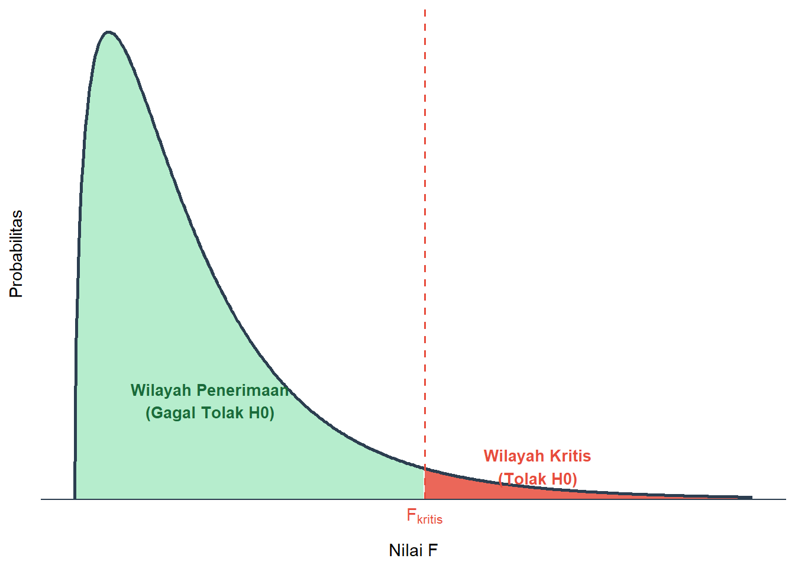

Bab 9 Uji Hipotesis Parameter Lebih dari Dua Populasi (ANOVA)
Capaian Pembelajaran
Setelah mempelajari bab ini, Anda diharapkan mampu memaknai hasil dari pengujian hipotesis parameter dua populasi atau lebih pada suatu kasus STP-7.1
Pada bab-bab sebelumnya, kita telah membahas pengujian hipotesis parameter baik untuk satu maupun dua populasi (dependen dan independen). Untuk kasus lebih dari dua populasi, konsep dasarnya sama. Perbedaannya hanya terletak pada jumlah populasi (lebih dari dua) dan parameter yang diuji (hanya rata-rata).
Selain itu, pengujian ini tidak memiliki “bentuk hipotesis alternatif” spesifik selain pernyataan “ada perbedaan”. Hal ini karena terdapat banyak kemungkinan perbedaan antarpopulasi jika jumlahnya lebih dari dua. Oleh karena itu, metode analisis yang digunakan berbeda dari sebelumnya, yaitu ANOVA (Analysis of Variance).
9.1 Konsep Analysis of Variance (ANOVA)
Pengujian hipotesis parameter lebih dari dua populasi menggunakan teknik yang disebut ANOVA (Analysis of Variance). ANOVA merupakan metode statistik inferensial yang dirancang khusus untuk membandingkan rata-rata dari lebih dari dua populasi atau kelompok.
Teknik ini digunakan untuk menentukan, berdasarkan satu variabel metrik (interval-rasio), apakah sampel-sampel berasal dari populasi yang memiliki rata-rata yang sama.
Secara konsep, ANOVA membandingkan variasi antar kelompok (between-group variance) dengan variasi di dalam kelompok (within-group variance) untuk menilai apakah perbedaan rata-rata yang muncul bersifat signifikan secara statistik atau hanya terjadi karena faktor kebetulan (random error).
9.2 Hipotesis Kosong dan Alternatif ANOVA
Bentuk hipotesis kosong dari uji hipoteis parameter lebih dari dua populasi adalah “tidak ada perbedaan rata-rata dalam populasi-populasi yang dibandingkan”.
\[ H_0: \mu_A = \mu_B = \mu_C = ... \]
Sementara itu, bentuk hipotesis alternatifnya hanyalah “salah satu atau lebih dari dua populasi memiliki rata-rata yang berbeda”. Hal ini mengakibatkan tidak ada bentuk pernyataan hipotesis alternatif yang spesifik.
9.3 Langkah Pengujian Hipotesis dengan ANOVA
Langkah-langkah pengujian hipotesis menggunakan prosedur ANOVA akan dijelaskan sebagai berikut.
9.3.1 Menyatakan Asumsi Awal
Agar prosedur ANOVA dapat dilakukan, terdapat beberapa asumsi yang harus dipenuhi (Healey 2021; Vaus" 2014), di antaranya
- Sampel harus acak dan independen satu sama lain;
- Tingkat pengukuran variabel yang diuji adalah interval-rasio;
- Data terdistribusi normal. Pada dasarnya, ANOVA toleran terhadap beberapa pelanggaran, tetapi keberadaan outlier yang parah akan mengganggu hasil analisis sehingga akan lebih baik jika asumsi ini terpenuhi;
- Variansi kelompok harus kira-kira sama untuk semua populasi.
9.3.2 Merumuskan Hipotesis Kosong dan Alternatif
Pada dasarnya, hipotesis dalam prosedur ANOVA memiliki bentuk yang seragam. Peneliti hanya perlu menyesuaikan notasinya sesuai dengan konteks atau kebutuhan penelitian yang dilakukan. Adapun bentuk matematis dari hipotesis dalam analisis ANOVA telah dijelaskan dalam subbab 9.2.
Studi Kasus: Uji ANOVA Biaya Perjalanan Tiga Kampus
Dinas Perhubungan melakukan survei biaya perjalanan per bulan (dalam ribu rupiah) dari mahasiswa di tiga kampus yang ada di Bandar Lampung: UIN RIL, UNILA, dan UBL. Ringkasan datanya dihimpun dalam metrik berikut:
| Kampus | Ukuran Sampel | Rata-rata (ribu rupiah) |
|---|---|---|
| UINRIL | 400 | 39,33 |
| UNILA | 394 | 74,00 |
| UBL | 378 | 99,18 |
| Tiga kampus | 1.172 | 70,29 |
Dengan tingkat signifikansi sebesar 5%, apakah perbedaan rata-rata biaya perjalanan di antara ketiga kampus tersebut nyata secara statistik?
Jawaban:
Menyatakan Asumsi Awal
Setiap subjek beserta catatan biayanya dipilah ke dalam sampel pengamatan secara acak dari ketiga kampus tanpa saling mencampuri observasi lainnya (independen). Objek yang diteliti, yaitu biaya, berderajat numerik (interval-rasio). Mengingat besaran cakupan seluruh sampel melintasi rekomendasi kenormalan (>100), sebaran statistik diyakini memadai asumsi berdistribusi normal. Disertai pula asusmi kesetaraan disparitas keberagaman nilainya di rentang proporsi populasi (homogenitas varians).Menetapkan Hipotesis Kosong dan Alternatif (\(H_0\) dan \(H_1\))
- Hipotesis Kosong (\(H_0: \mu_{UIN} = \mu_{UNILA} = \mu_{UBL}\)): Tidak terdapat perbedaan signifikan dalam parameter rata-rata rasio biaya perjalanan populasi mahasiswa di ketiga kampus tersebut.
- Hipotesis Alternatif (\(H_1\)): Terdapat setidaknya kelompok dari salah satu kampus yang rata-rata biaya perjalanannya berlainan dibandingkan yang lain.
9.3.3 Menentukan Wilayah dan Titik Kritis
Dalam prosedur ANOVA, distribusi sampling yang digunakan adalah distribusi F. Distribusi ini memungkinkan peneliti untuk menguji hipotesis kosong (\(H_0\)) mengenai ada tidaknya perbedaan rata-rata di antara dua kelompok atau lebih.
Bentuk distribusi F bersifat asimetris (miring ke kanan) dan nilainya selalu positif (Gambar 9.1). Hal ini karena nilai F diperoleh dari perbandingan antara dua parameter penting, yaitu variansi antar kelompok (between groups) dan variansi dalam kelompok (within groups).
\[ F = \frac{Variansi\ Antar\ Kelompok}{Variansi\ Dalam\ Kelompok} \tag{9.1} \]

Gambar 9.1: Bentuk Distribusi F dan Wilayah Kritisnya
Makna nilai \(F\) yang besar menunjukkan bahwa perbedaan rata-rata antarkelompok signifikan secara statistik, sedangkan nilai \(F\) yang mendekati 1 menunjukkan bahwa perbedaan antarkelompok cenderung terjadi karena kebetulan.
Menentukan \(F_{kritis}\) dan wilayah kritis pada ANOVA membutuhkan 3 parameter penting: derajat kebebasan di dalam kelompok (degree of freedom within group, \(dfw\)), derajat kebebasan di antara kelompok (degree of freedom between group, \(dfb\)), dan tingkat signifikansi (\(\alpha\)) sebagai wilayah kritis. Ketiga parameter tersebut menjadi penentu nilai \(F_{kritis}\) dari tabel distribusi F.
Nilai \(\alpha\) menjadi variasi tabel, sementara itu di setiap tabel kita menentukan nilai \(F_{kritis}\) berdasarkan nilai \(dfw\) yang bertindak sebagai baris dan \(dfb\) yang bertindak sebagai kolom.
Tabel tersebut dapat kita lihat pada Tabel 15.3 untuk \(\alpha = 5\%\) dan Tabel 15.2 untuk \(\alpha = 10\%\) di bagian Lampiran.
9.3.4 Menghitung Statistik Uji
Perhitungan statistik uji, dalam hal ini adalah nilai F dihitung dengan persamaan (9.2) berikut yang merupakan penjabaran dari persamaan (9.1).
\[ F = \frac{MSB}{MSW} \tag{9.2} \]
Di mana \(MSB\) adalah Mean Square Between atau variansi antar kelompok, dan \(MSW\) adalah Mean Square Within atau variansi dalam kelompok.
Untuk menghitung \(MSB\) sendiri kita menggunakan persamaan berikut
\[ MSB = \frac{SSB}{dfb} \tag{9.3} \]
\(SSB\) sendiri kita hitung dengan persamaan berikut
\[ SSB = \sum_{i=1}^{k} n_i (\bar{x}_i - \bar{x})^2 \tag{9.4} \]
dengan
- \(n_i\) adalah ukuran sampel dari populasi ke-\(i\)
- \(\bar{x}_i\) adalah rata-rata sampel dari populasi ke-\(i\)
- \(\bar{x}\) adalah rata-rata gabungan sampel dari keseluruhan populasi
Untuk menghitung \(MSW\) kita menggunakan persamaan berikut
\[ MSW = \frac{SSW}{dfw} \tag{9.5} \]
Dalam prosedur ANOVA, variasi total dari seluruh skor dibagi menjadi dua komponen utama: variasi di dalam kelompok (\(SSW\)) dan variasi antar kelompok (\(SSB\)). Jika keduanya dijumlahkan, kita mendapatkan nilai variasi total (Total Sum of Squares, \(SST\)) yang dinyatakan sebagai
\[ SST = SSB + SSW \tag{9.6} \]
sehingga \(SSW\) dapat diperoleh dengan
\[ SSW = SST - SSB \tag{9.7} \]
\(SST\) sendiri terlebih dahulu dihitung dengan persamaan
\[ SST = \sum x^2 - N\bar{x}^2 \tag{9.8} \]
dengan
- \(\sum x^2\) adalah jumlah dari kuadrat masing-masing skor observasi
- \(N\) adalah jumlah total observasi dari seluruh kelompok
- \(\bar{x}\) adalah rata-rata gabungan dari seluruh skor (grand mean)
Langkah-langkah menghitung SSW:
Menghitung \(SST\): Kuadratkan setiap skor secara individual, lalu jumlahkan seluruh hasilnya untuk mendapatkan \(\sum x^2\). Selanjutnya, kuadratkan grand mean \(\bar{x}\) dan kalikan dengan jumlah total observasi \(N\). Kurangkan hasil perkalian tersebut dari \(\sum x^2\) untuk mendapatkan nilai \(SST\).
Menghitung \(SSB\): Untuk setiap kelompok ke-\(i\), hitung selisih antara rata-rata kelompok \(\bar{x}_i\) dan grand mean \(\bar{x}\), lalu kuadratkan. Kalikan deviasi yang telah dikuadratkan tersebut dengan jumlah sampel kelompok \(n_i\). Jumlahkan hasil perkalian dari seluruh kelompok untuk mendapatkan nilai \(SSB\) (Persamaan (9.4)).
Menghitung \(SSW\): Kurangkan nilai \(SSB\) dari nilai \(SST\). Selisih inilah yang merupakan nilai \(SSW\) (Persamaan (9.7)).
9.3.5 Menarik Kesimpulan
Penarikan kesimpulan dilakukan dengan membandingkan nilai statistik uji, yaitu nilai \(F\) hasil perhitungan (\(F_{uji}\)) terhadap nilai \(F_{kritis}\) dari tabel. \(H_0\) akan ditolak apabila nilai \(F_{uji}\) lebih besar dari nilai \(F_{kritis}\) atau \(F_{uji} > F_{kritis}\), sementara apabila nilai \(F_{uji} < F_{kritis}\), maka hasil pengujian gagal menolak \(H_0\).
Jika kita menggunakan pendekatan p-value yang digunakan di banyak perangkat lunak statistik seperti bahasa R atau SPSS, p-value < signifikansi (\(\alpha\)) berarti kita menolak \(H_0\), sementara jika p-value > signifikansi (\(\alpha\)) maka kita gagal menolak \(H_0\).
Lanjutan Studi Kasus: Uji ANOVA Biaya Perjalanan Tiga Kampus
Setelah menyatakan asumsi dan merumuskan hipotesis, langkah selanjutnya adalah menguji hipotesis tersebut dengan membandingkan \(F_{kritis}\) atau \(F_{tabel}\) dengan \(F_{hitung}\) yang dilakukan sebagai berikut.
Menetapkan Wilayah Kritis dan Titik Kritis
Wilayah kritis kita adalah nilai \(\alpha\) yang digunakan untuk pengujian, yakni 5%. Untuk mencari titik kritisnya, maka kita harus menggunakan Tabel \(F\) dengan \(\alpha = 5\%\). Untuk menentukan titik kritisnya, kita menggunakan dua besaran derajat kebebasan \(dfb\) dan \(dfw\).\[ \begin{align} dfb &= K - 1 \\ &= 3 - 1 \\ &= 2 \\ dfw &= N - K \\ &= 1.172 - 3 \\ &= 1.169 \end{align} \]
Oleh karena nilai \(dfw\) sangat besar, kita menggunakan angka tak hingga (\(\infty\)). Dari nilai \(dfb\) yang menjadi kolom dan \(dfw\) yang menjadi baris, kita mendapatkan titik kritis kita sebesar 3,00.
Menghitung Statistik Uji Menghitung nilai \(F_{hitung}\) (persamaan (9.2)) memerlukan nilai \(MSB\) dan \(MSW\). Nilai \(MSB\) dan \(MSW\) dihitung dengan persamaan (9.3) dan (9.5) yang dihasilkan dari nilai \(SSB\) dan \(SSW\) (persamaan (9.4) dan (9.7)).
Nilai Total Variasi (\(SST\)): Variansi ditelaah pada setiap individu responden untuk dikurangkan terhadap grand mean yang diketahui sebesar 70,29. Mengutip 5 nilai sampel pertama (diketahui berasal dari UNILA: 150, 150, 25, 25, 25), kita menghitung SST sesuai persamaan (9.6):
\(x_i\) \(x_i^2\) 150 22.500 150 22.500 25 625 25 625 25 625 \(\dots\) \(\dots\) \[ \begin{align} \sum x_i^2 &= 22.500 + 22.500 + 625 + 625 + 625 + \dots = 11.205.372 \nonumber\\ SST &= \sum x_i^2 - N\bar{x}^2 \nonumber\\ &= 11.205.372 - 1.172(70,29)^2 \nonumber\\ &\approx \mathbf{5.414.663} \nonumber \end{align} \]
Nilai Variasi Antar-Kelompok (\(SSB\)): Variansi ini mengukur seberapa jauh perbedaan rata-rata tiap kampus (\(\bar{x}_j\)) terhadap rata-rata gabungan keseluruhannya (grand mean). Karena jumlah sampel kita sangat banyak, perhitungannya bisa dipersingkat. Kita cukup mencari selisih rata-rata tiap kampus dengan grand mean, mengkuadratkannya, lalu mengalikannya dengan jumlah sampel di kampus tersebut (\(n_j\)):
Kampus (\(j\)) \(n_j\) \(\bar{x}_j\) \((\bar{x}_j - \bar{x})\) \((\bar{x}_j - \bar{x})^2\) \(n_j(\bar{x}_j - \bar{x})^2\) UINRIL 400 39,33 -30,96 958,52 383.408,6 UNILA 394 74,00 3,71 13,76 5.423,1 UBL 378 99,18 28,89 834,63 315.490,9 \[ \begin{align} SSB &= \sum n_j(\bar{x}_j - \bar{x})^2 \\ &= 383.408{,}6 + 5.423{,}1 + 315.490{,}9 \\ &= \mathbf{704.322{,}6} \approx \mathbf{704.352{,}5} \end{align} \]
Nilai Variasi Dalam-Kelompok (\(SSW\)): Nilai ini mewakili variasi alami yang memang terjadi di dalam observasi masing-masing kelompok kampus. Alih-alih menghitung rumusnya dari awal satu per satu, kita bisa memanfaatkan sifat penjumlahan komponen variasi secara langsung. Kita cukup mengurangkan variasi total (\(SST\)) dengan variasi antar-kelompok (\(SSB\)):
\[ \begin{align} SSW &= SST - SSB \nonumber\\ &= 5.414.663 - 704.352{,}5 \nonumber\\ &= \mathbf{4.710.310{,}5} \nonumber \end{align} \]
Nilai variasi \(SSB\) dan \(SSW\) yang baru saja kita dapatkan belum bisa dibandingkan secara langsung. Kita harus menstandarkannya terlebih dahulu dengan membaginya menggunakan besaran derajat kebebasannya (\(df\)) masing-masing untuk memperoleh nilai rata-rata kuadrat atau Mean Square (\(MSB\) dan \(MSW\)). Setelah itu, barulah kita bisa mendapatkan nilai \(F_{hitung}\) dari pembagian antara \(MSB\) dan \(MSW\):
\[ \begin{align} MSB &= \frac{SSB}{dfb} \\ &= \frac{704.352{,}5}{2} \\ &= 352.176{,}2 \\ MSW &= \frac{SSW}{dfw} \\ &= \frac{4.710.310{,}5}{1.169} \\ &= 4.029{,}3 \\ F_{hitung} &= \frac{MSB}{MSW} \\ &= \frac{352.176{,}2}{4.029{,}3} \\ &= \mathbf{87{,}4} \end{align} \]
Menarik Kesimpulan
Nilai \(F_{hitung}\) yang kita peroleh sebesar 87,4 jauh melampaui rentang nilai penerimaan wajar karena nilainya lebih besar daripada nilai \(F_{kritis}\) sebesar 3,00 (\(F_{hitung} > F_{kritis}\)). Dengan jatuhnya nilai statistik uji ini ke dalam wilayah kritis, keputusan akhir kita adalah menolak hipotesis kosong (\(H_0\)).Membahas Interpretasi
Ditolaknya hipotesis kosong menunjukkan bahwa, secara komparatif statistik probabilitas, dapat disimpulkan bahwa terdapat perbedaan rata-rata biaya perjalanan yang nyata (signifikan) minimal untuk salah satu populasi mahasiswa di ketiga kampus tersebut. Asumsi netral (\(H_0\)) bahwa beban pengeluaran transportasi mahasiswa sama berapapun biayanya di setiap kampus kita tolak.Secara realita di lapangan, perbedaan ini bisa menunjukkan adanya karakteristik khas dari kampus tertentu yang membuat mahasiswanya butuh biaya keseharian transportasi mobilitas lebih tinggi (misalnya terkait kepemilikan dan pilihan moda kendaraan pribadi yang lebih mahal, atau keterpencilan lokasi). Bagi instansi pemerintah dan perencana transportasi, pembuktian kesenjangan aksesibilitas ekonomi antarwilayah kampus ini dapat menjadi basis dasar analitik dalam merumuskan penyediaan infrastruktur transportasi massal, program penyediaan bus school, atau kebijakan tarif subsidi publik yang tepat sasaran.
Soal Evaluasi 17
Sebagai bagian dari upaya peningkatan keselamatan di lingkungan kampus, mahasiswa ITERA diwajibkan mematuhi peraturan berkendara, salah satunya adalah menggunakan helm saat mengendarai kendaraan bermotor, termasuk ketika berpindah antar gedung untuk mengikuti perkuliahan.
Rektorat berhipotesis bahwa tingkat kepatuhan mahasiswa terhadap peraturan berkendara, khususnya pemakaian helm, berbeda antar tingkat perkuliahan. Untuk menguji hipotesis tersebut, dilakukan survei selama 30 hari dengan memasang kamera pengawas di beberapa ttiik strategis. Plat nomor motor setiap mahasiswa didata dan dicocokkan dengan identitas mahasiswa yang terdaftar. Algoritma pengenalan plat nomor kendaraan dan pemakaian helm dari rekaman video pun dikembangkan untuk memudahkan pendataan pelanggar. Setiap pelanggar per hari dicatat dan rata-rata jumlah pelanggar dihitung untuk setiap tingkat perkuliahan. Hasil surveinya adalah sebagai berikut
| Tingkat Perkuliahan | Jumlah Sampel | Rata-rata Jumlah Pelanggar |
|---|---|---|
| Tahun Pertama | 200 | 30 |
| Tahun Kedua | 220 | 32 |
| Tahun Ketiga | 310 | 59 |
| Tahun Keempat | 175 | 33 |
Dari data tersebut diperoleh SST sebesar 36.193.660 dan SSB sebesar 153.660. Dengan tingkat signifikansi 0,05 tentukan apakah hipotesis rektorat tersebut berlaku? STP-7.1